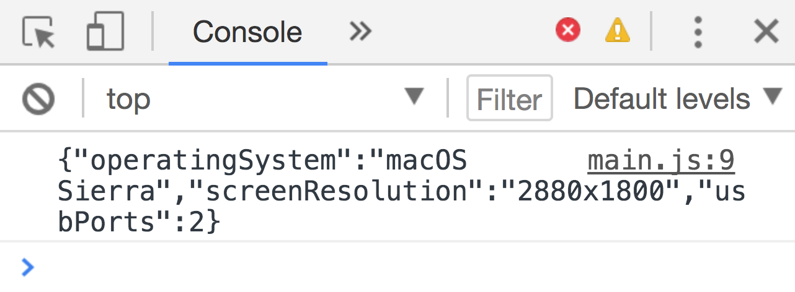
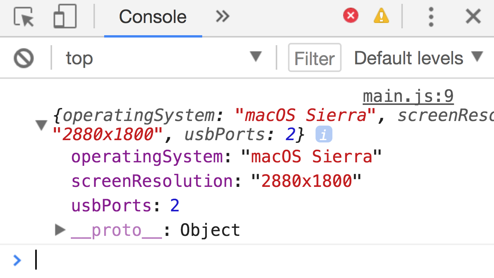
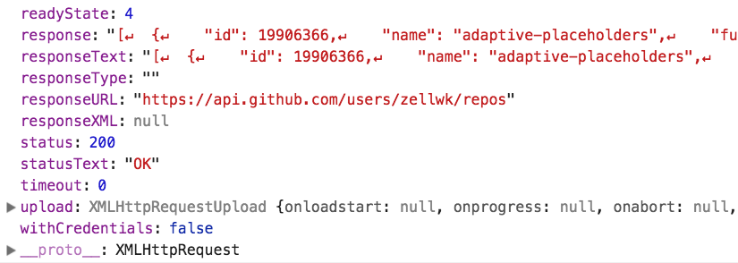
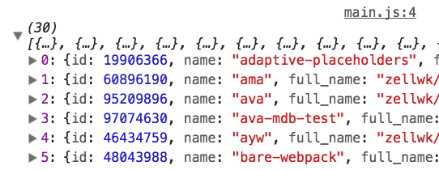
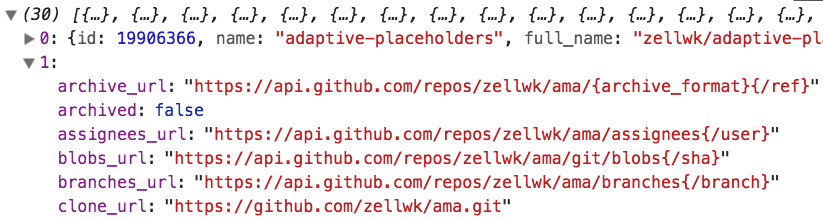

If you log jsonMac into the console, you’ll see a string.

Converting from JavaScript to JSON
To convert JSON to JavaScript, we use JSON.parse.
const jsMac = JSON.parse(jsonMac)
If you log jsMac into the console, you’ll see a JavaScript object.

Converting JSON to JavaScript
Parsing the response from XMLHttpRequest
Github responded with a list of my repositories in the previous lesson. This list can be found in the response property.

Response from Github
The value for this response property is formatted in JSON. Before we can do anything with the JSON, we need to convert it to JavaScript. This process of interpreting and converting values is called parsing.
request.addEventListener('load', e => {
const repos = JSON.parse(e.target.response)
console.log(repos)
})

A list of my repositories
Massaging the data
Github gave us a lot of data. We have an array of 30 objects. Each object contains information about a Github repository.

Information about a repo is contained in each object
Github sent us a lot of information! This information can feel overwhelming. That is why the first thing we do is reduce the information to what we need. Some developers call this process massaging the data.
To massage the data, you need to know what data we need. That would depend on what you are trying to do.
For our case, let’s say we want to display a list of my Github repositories in the DOM. We want to know three things:
The name of the repository
The number of stars it has
The link to the repository
We want to create a list that looks like this:
<ol>
<li><a href="link-to-repo1">Name of repo1 (# of stars)</a></li>
<li><a href="link-to-repo2">Name of repo2 (# of stars)</a></li>
<li><a href="link-to-repo3">Name of repo3 (# of stars)</a></li>
<li><a href="link-to-repo4">Name of repo4 (# of stars)</a></li>
</ol>
The first step is to extract the information we need. If you comb through all property and value pairs, you’ll see we need these properties:
Name of the repo—name
Number of starsstargazer_count
Link to the repo—html_url
We can create a new array that contains only the information we need with map.